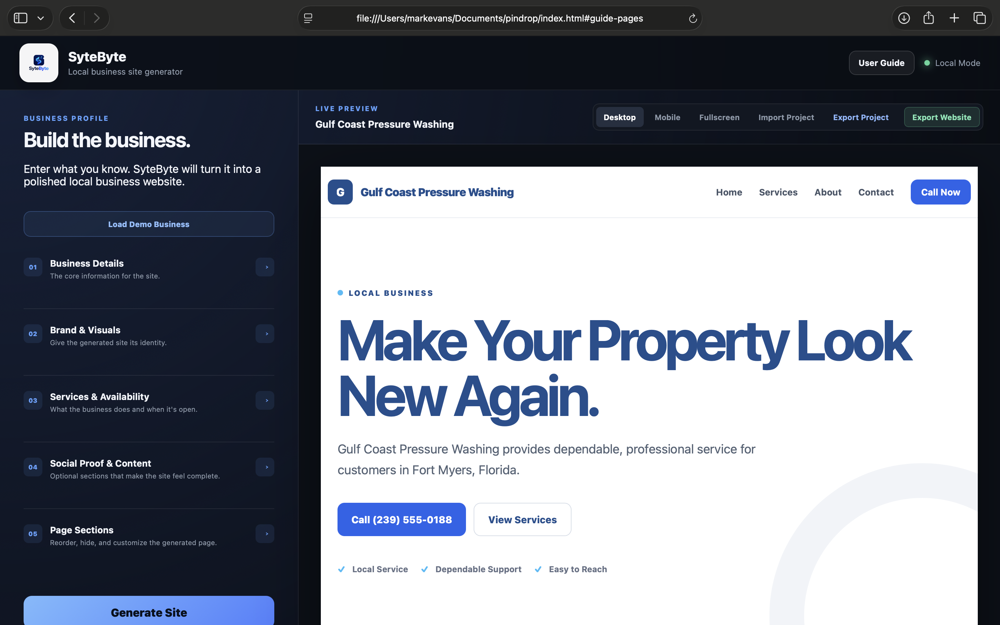

Build
Enter business details, services, hours, testimonials, FAQs, service areas, and other core information.
LOCAL-FIRST WEBSITE BUILDER
SyteByte turns structured business information into a polished, responsive, multipage website — locally, without a CMS or framework.

WHAT IT IS
SyteByte combines structured business data, visual controls, multipage management, and live preview into one local tool. When the site is finished, it publishes clean static files that can be hosted almost anywhere.
WORKFLOW
Enter business details, services, hours, testimonials, FAQs, service areas, and other core information.
Choose templates, colors, layouts, textures, imagery, motion, sections, and multipage structure.
Watch the generated website update while you work and navigate between pages inside the builder.
Export the finished website as a ZIP containing static, deployable HTML pages.
FEATURES
The builder runs locally in the browser without requiring a hosted CMS.
Create Home, About, Services, Gallery, Contact, Collection, and custom pages.
Start with layouts designed for local service, restaurant, professional, retail, automotive, or blank projects.
Connect calls to action, products, collections, pages, sections, and external destinations.
Edit content and design controls while viewing the generated website beside the builder.
Save editable projects as SyteByte project files and import them again later.
Publish the completed multipage website into a portable ZIP.
The application includes its own reference guide and recommended workflow.
UNDER THE HOOD
SyteByte is intentionally built with plain web technologies. The project focuses on application architecture, state, generation logic, and user experience without hiding behind a large framework.
WHY I BUILT IT
SyteByte started as a way to rapidly create polished MVP websites for local businesses using information gathered manually. The goal was to prove the website-generation workflow before introducing external data APIs or unnecessary infrastructure.
The result became a reusable local application capable of building, saving, previewing, and publishing complete small-business websites.
ACTIVE DEVELOPMENT
The core builder, multipage architecture, project system, structured links, live preview, and static publishing workflow are operational.